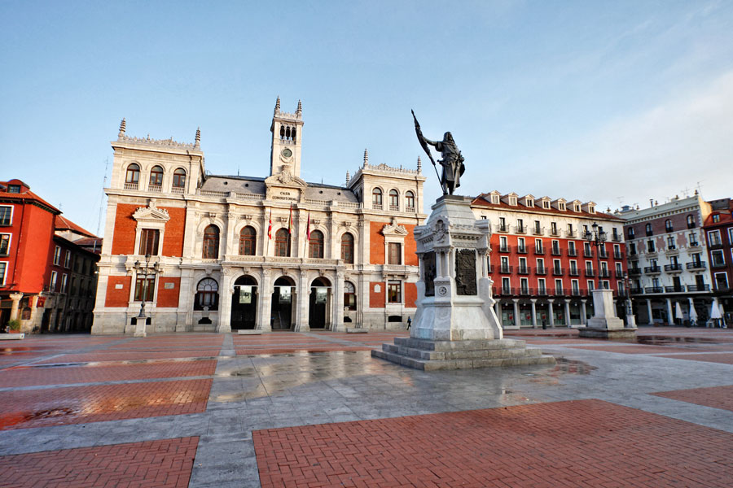

Valladolid
Localizacion
La ciudad de Valladolid se encuentra en la mitad norte de la península ibérica. Está situada en el centro de la Meseta Norte, división de la Meseta Central, por lo que presenta un paisaje típico, llano y con escasa vegetación. El relieve vallisoletano lo conforma una llanura interrumpida por pequeñas series de colinas que originan un paisaje montañoso de cerros testigos como el de San Cristóbal (843 m), a pocos kilómetros de la capital. Las coordenadas de la ciudad son 41º 38' N 4º 43' O. La altitud del centro de la ciudad es de 690 m s. n. m.,50 mientras que la altitud máxima del municipio es de 863 m s. n. m., la cual se da al noreste del mismo, entre Páramo de Cabezón y Barco de San Pedro; y la altitud mínima es de 671 m s. n. m., la cual se da en el último tramo del río Duero dentro del municipio, a unos metros de su confluencia con el río Pisuerga.2.
El término municipal cuenta con dos exclaves, uno al norte de Villanubla (Navabuena) y otro al oeste de Ciguñuela (El Rebollar).
Noroeste: Villanubla Norte: Fuensaldaña, Cigales, Santovenia de Pisuerga Noreste: Cabezón de Pisuerga, Castronuevo de Esgueva
Oeste: Zaratán, Arroyo de la Encomienda, Simancas Rosa de los vientos.svg Este: Renedo de Esgueva, La Cistérniga
Suroeste: Villanueva de Duero Sur: Viana de Cega, Villanueva de Duero Sureste: Laguna de Duero, Boecillo
Su céntrica situación en la Meseta Norte le hace estar casi equidistante del resto de las ciudades castellanas. Palencia está a 50 kilómetros, Zamora a 104 kilómetros, Segovia a 117 kilómetros, Salamanca a 121 kilómetros, Burgos a 127 kilómetros, Ávila a 138 kilómetros, León a 139 kilómetros y Soria a 208 kilómetros.

Imagenes obtenidas de esta web
Localidades Principales
Peñafiel
Otro de los pueblos más bonitos de Valladolid que bien vale la pena mencionar es Peñafiel, un curioso pueblecito del este de la provincia, que le pertenece a la comarca de Campo de Peñafiel.
Esta localidad cuenta con un increíble pasado histórico que se ve reflejado en su extenso patrimonio arquitectónico, del cual forman parte monumentos como la Ermita del Santísimo Cristo del Humilladero, la Iglesia de Santa María de Mediavilla, la Iglesia de San Miguel de Reoyo, el Convento de Santa Clara, el Castillo de Peñafiel y los restos de la muralla.
Tordesillas
Continuando con la lista de los pueblos con más encanto de la provincia vallisoletana, es el turno de hablar acerca de Tordesillas, un pintoresco poblado situado en el centro de Valladolid, cuyo territorio le pertenece a la comarca de la Tierra del Vino.
Esta localidad cuenta con un atractivo entorno natural, con parajes bellísimos como el de la Reserva Natural de Lagunas de Villafáfila, y con un patrimonio arquitectónico sorprendente, conformado por obras como la Iglesia de San Antolín, la Iglesia de Santa María y el Real Monasterio de Santa Clara, cuya visita es casi obligatoria.
Simancas
Simancas es otro de los pueblos más bonitos de Valladolid que debes conocer en tu viaje a la provincia, pues se trata de una interesante villa de la comarca de la Campiña del Pisuerga, en la que tendrás mucho por ver y por hacer.
Entre los sitios y monumentos que podrás visitar en la localidad, se encuentran la Iglesia de El Salvador, el Puente de Simancas y el Castillo del pueblo, en el que tiene lugar el Archivo General de Simancas.
Además de estos edificios, podrás admirar bellísimos parajes naturales, cortesía de las riberas del Pisuerga.
Medina del Campo
Nos dirigimos ahora a la zona sur de la provincia, a la comarca de Tierras de Medina, donde tiene lugar otro de los pueblos más bellos de Valladolid, como lo es Medina del Campo.
Con un extraordinario patrimonio arquitectónico, esta localidad es una de las que, sin lugar a dudas, debes visitar si planeas viajar a España para conocer lo mejor de la provincia vallisoletana.
Entre sus obras más representativas figuran la Colegiata de San Antolín, ubicada en la Plaza Mayor, y el Castillo de la Mota, declarado Bien de Interés Cultural.
Medina de Rioseco
Perteneciente a la comarca de Tierra de Campos, Medina de Rioseco es también una de las villas más distinguidas de la provincia de Valladolid. Y esto es gracias a sus espectaculares parajes, incluidos el Canal de Castilla y las Lagunas de Villafáfila, y a su participación en la famosa ruta de peregrinación del Camino de Santiago.
Cuenta con un valioso patrimonio histórico, conformado por obras como el Castillo, la Iglesia de Santa María de Mediavilla, la Iglesia de Santa Cruz y la Iglesia de San Francisco, el Convento de Santa Clara y el de San José.
Olmedo
Ubicado al sur de la provincia, en la comarca de Tierra de Pinares, se encuentra Olmedo, otro de los pueblos más bonitos de Valladolid que debes darte el lujo de conocer.
Te recomendamos acercarte a las iglesias de San Miguel y de San Andrés, el Monasterio de la Concepción, la Casa de los Dávila y el Parque Temático Mudéjar, cuyas visitas no te defraudarán.
Como dato curioso, debes saber que esta localidad es llamada “la villa de los siete sietes”, pues solía tener siete arcos, siete plazas, siete casas nobles, siete iglesias, siete conventos, siete fuentes y siete pueblos de su alfoz.
Íscar
Continuamos por la zona oriental de Valladolid, por la comarca de Tierra de Pinares, donde tiene lugar el precioso pueblo de Íscar, el cual, ubicado casi en la frontera con Segovia, sorprende por sus encantadores paisajes, como el que ofrece el paraje natural del Mar de Pinares.
Esta localidad cuenta con un patrimonio histórico considerable, del cual destacan obras como el Castillo de Íscar, el cual domina la villa al situarse en la cima de una colina, la Iglesia de Santa María, la Iglesia de San Miguel y el Humilladero, monumentos que, sin lugar a dudas, conviene visitar.
Trigueros del Valle
Situada al norte de la provincia, en la comarca de la Campiña del Pisuerga, se halla la localidad de Trigueros del Valle que, en nuestra opinión, tiene todo lo necesario para ser considerada una de las villas más encantadoras de Valladolid.
Un paseo por sus calles, adornadas con casas de piedra y adobe, te permitirá descubrir monumentos y lugares importantes, como el Castillo, la Iglesia de San Miguel Arcángel y la Ermita de Nuestra Señora de la Virgen del Castillo.
Cabe mencionar que esta localidad alberga varias bodegas famosas, en las que se almacenan exquisitos vinos con D.O. Cigales.
Villalba de los Alcores
El último de los pueblos vallisoletano que nos complace presentarte es Villalba de los Alcores, un atrayente poblado del norte de la provincia, que tiene lugar en la comarca de los Montes Torozos y que le ofrece al turista espectaculares parajes, como el que corresponde al Embalse del río Bajoz.
Además de la belleza de su entorno, esta localidad se caracteriza por su impresionante patrimonio arquitectónico, el cual se halla conformado por edificios de gran valor, como la Iglesia de Santa María del Templo, el Monasterio de Santa María de Matallana, el Castillo y la muralla.
.jpg)
Imagenes obtenidas de esta web
Geografia
La provincia de Valladolid tiene una extensión de 8111 km²;3 está situada en el centro de la Meseta Norte (mitad superior de la meseta Ibérica) y se caracteriza por la uniformidad de su orografía (777 m s. n. m. de media con un desnivel máximo de 300 metros28) convirtiéndose en la provincia más homogénea geográficamente hablando de España. El río Duero, que la atraviesa de este a oeste, se convierte en una especie de columna vertebral del territorio.29
Está dominada por una extensa llanura en la que se distinguen: una zona de páramos calizos definidos por los valles de diferentes ríos, algunos de los cuales destacan en altitud originando un paisaje montañoso de cerros testigos, tales como los montes Torozos, cerro de Cuchillejo (932 m s. n. m.), cerro de San Cristóbal (843 m s. n. m.) y el Sardanedo (854 m s. n. m.); una zona de campiña, de suaves lomas; y separando una y otra, las denominadas «cuestas», profundos barrancos con laderas escarpadas, como las de Prado Ancho, Santovenía de Cabezón, de Pisuerga, etc.
Es la única provincia peninsular que carece absolutamente de montañas (evidentemente tampoco tiene costa), y también -junto con la provincia de Almería- la que menos superficie arbolada tiene (menos del 16 % del territorio).30 El punto más alto está en Castrillo de Duero y es el cerro de Cuchillejo (932 m). El punto más bajo es el río Duero a su paso por Villafranca de Duero (626 m). Por ello, también se trata de la única provincia de Castilla y León que no alcanza los 1000 m de altura sobre el nivel del mar en ningún punto de su territorio.
Red hidrográfica dominada por el río Duero y sus afluentes (Pisuerga, Esgueva, Adaja, Eresma, Duratón, Zapardiel y Cega, entre otros) y completada con el canal de Castilla y el canal del Duero. Un único lago relevante: La Laguna de Duero. La provincia dispone de cuatro embalses: Encinas de Esgueva, San José, Bajoz y Valdemudarra, todos construidos en el siglo XX, salvo el último que fue construido en la primera década del siglo XXI.
Audio obtenido de esta web
Historia
Fundación
Hay indicios datables en el Paleolítico Inferior, esencialmente Achelense, recogido en superficie en las terrazas cuaternarias del río Pisuerga, en Canterac (que actualmente es un gran parque situado a las afueras);16 pero no se puede decir que la ciudad tuviera una ocupación estable hasta la Edad Media, que es posiblemente cuando surgió el topónimo que le da nombre. Los asentamientos posteriores en la actual provincia de Valladolid datan de épocas prerromanas, existiendo en la zona yacimientos de pueblos vacceos, que fueron pobladores de cultura muy avanzada, y, como el resto de pueblos célticos, llegaron a la península procedentes del norte de Europa. El máximo exponente de esta cultura en las cercanías, que fue arrasada por los romanos, es Pincia (Pintia), en la actual localidad de Padilla de Duero.
Durante años, se creyó que Valladolid era la antigua Pincia, hasta que las excavaciones arqueológicas demostraron la verdadera ubicación de la ciudad vaccea. En varias zonas del casco antiguo de la ciudad han aparecido restos de época romana: junto a la iglesia de la Antigua aparecieron evidencias constructivas de una villa de cierta entidad (siglos i-iii),17 así como en las calles Angustias, Arribas, Juan Mambrilla y en las del Empecinado y Padilla, donde se tiene constancia de la aparición de varios mosaicos romanos. También ha habido hallazgos en puntos periféricos de la ciudad; en los alrededores del Monasterio de Nuestra Señora de Prado se descubrió en los años 50 otra villa: la Villa romana de Prado, la cual acoge un amplio conjunto arquitectónico residencial, acompañado de mosaicos. De hecho, un gran mosaico de mármol y caliza, el Mosaico de los cantharus (datado en el siglo iv), preside el hemiciclo de las Cortes de Castilla y León (depositado por el Museo de Valladolid).
Repoblamiento y expansión
En el siglo x Alfonso III de Asturias consolidó la frontera del Reino de Asturias hasta el Duero, pasando a formar parte del Condado de Castilla. En el siglo xi, durante la repoblación de la Meseta, el rey Alfonso VI de León encargó al conde de Saldaña y Carrión, Pedro Ansúrez, y a su esposa, doña Eylo Alfonso, el poblamiento y expansión del primitivo núcleo agrario, que ya existía y se organizaba mediante Concejo abierto. Alfonso VI otorgó el señorío de la misma al conde en 1072, fecha a partir de la cual se produjo el crecimiento de la ciudad. Este hizo construir un palacio para él y su esposa, doña Eylo, que no se conserva, así como la Colegiata de Santa María (lo que le otorgó el rango de villa) y la iglesia de La Antigua. En 1208, el rey Alfonso VIII de Castilla la nombró ciudad cortesana y en 1255 Alfonso X le otorgó el Fuero Real.
Tras la temprana muerte de Enrique I de Castilla, nacido en Valladolid, y la abdicación de su madre, Fernando III el Santo fue proclamado en 1217 rey de Castilla, en acto realizado en la Plaza Mayor de Valladolid. Durante los siglos xii y xiii Valladolid experimentó un rápido crecimiento, favorecido por las ferias y privilegios comerciales otorgados por los monarcas Alfonso VIII y Alfonso X El Sabio. Durante estos siglos, la ciudad servía ocasionalmente como residencia real y sede de las Cortes. El primer Alcazarejo fue transformado en Alcázar Real, y la reina María de Molina, reina y regente de Castilla, se hizo edificar un palacio y estableció allí su residencia en torno al 1300. En 1346, el papa Clemente VI otorgó la bula que permitió el paso del Estudio Particular vallisoletano, existente desde la segunda mitad del siglo xiii, a Estudio General o Universidad.
Juan II de Castilla se crio y murió en Valladolid habiendo reinado desde esta ciudad de la que diría que es «la villa más notable de estos mis regnos e aun fuera de ellos». Este rey fue sepultado en la iglesia de San Pablo, hasta el traslado definitivo de sus restos a la Cartuja de Miraflores. En 1425 nacía Enrique IV de Castilla en la desaparecida Casa de las Aldabas de la calle de Teresa Gil. En 1453 Álvaro de Luna, todopoderoso valido de Juan II, es juzgado, condenado y finalmente decapitado en cadalso público en la plaza Mayor. El 7 de diciembre de 1453 se firmó en la ciudad la Concordia de Valladolid, poniendo paz entre Juan de Navarra (futuro rey de Aragón) y su hijo Carlos de Viana.
El 19 de octubre de 1469 Isabel de Castilla y Fernando de Aragón (que sería Fernando II de Aragón) celebraron su matrimonio secreto en el palacio de los Vivero (luego emplazamiento de la Real Audiencia y Chancillería), y pasaron su luna de miel en el castillo de Fuensaldaña. Ya en 1481 contaba Valladolid con imprenta, situada en el monasterio de Prado, de la Orden de San Jerónimo, y bajo los Reyes Católicos la ciudad vivió una etapa de gran dinamismo universitario, que culmina en la creación de los Colegios Mayores de Santa Cruz (por el cardenal Mendoza) y San Gregorio (por fray Alonso de Burgos), lo que hizo de Valladolid uno de los semilleros de la burocracia moderna.
Siglos XVI-XVIII
En 1489 se estableció definitivamente el tribunal de Chancillería, y en 1500 el de la Inquisición, para juzgar actos de herejía, dando lugar a la celebración de los Autos de Fe. En 1506 murió en Valladolid Cristóbal Colón, y fue enterrado en la ciudad, en el desaparecido convento de San Francisco. Otro navegante, Magallanes, firmó en Valladolid las capitulaciones con el rey Carlos I de España, antes de iniciar su ruta occidental hacia las Indias, el 22 de marzo de 1518. En 1509 nace en Valladolid Juan de Aragón y Foix, único hijo de Fernando el Católico y su segunda esposa Germana de Foix, que murió a las pocas horas de nacer.
En 1518 las Cortes de Castilla, reunidas en Valladolid, juraron como rey a Carlos I. Durante la Guerra de las Comunidades de Castilla, el incendio de Medina del Campo provocó el levantamiento de Valladolid y, tras la derrota comunera en Tordesillas, los rebeldes comenzaron a reagruparse en la ciudad, donde se estableció la Junta. Tras la victoria del emperador, y el perdón a los sublevados exceptuando sus cabecillas, Valladolid se convirtió en una de las capitales del Imperio español de Carlos I de España y V de Alemania, cobrando gran importancia política, judicial y financiera.
El 21 de mayo de 1527 nació el futuro rey Felipe II en el Palacio de Pimentel.
La célebre controversia de Valladolid tuvo lugar en 1550 y 1551 en el Colegio de San Gregorio y enfrentó dos formas antagónicas de concebir la conquista de América, representadas por Bartolomé de las Casas y Juan Ginés de Sepúlveda. Aquel debate se considera hoy pionero y una vital aportación en la historia a la construcción de los derechos humanos. Su resultado fueron nuevas ordenanzas que regulaban las conquistas, la creación de la figura del defensor de indios y un notable impulso del "derecho de gentes".
En 1559 se celebraron los autos de fe de mayo y octubre, famosos por su severidad. En 1561 la ciudad fue arrasada por un enorme incendio, tras el que Felipe II se comprometió a reconstruir la ciudad, dotándola de la primera plaza Mayor regular de España. Este rey concedió también a su villa natal el título de ciudad el 9 de enero de 1596 en virtud de una Real Provisión,20 y consiguió del papa Clemente VIII la creación de una diócesis en 1595 (elevada a archidiócesis en 1857).
San Juan de la Cruz y santa Teresa de Jesús coincidieron en Valladolid cuando la religiosa llegó a fundar en 1568 el primer convento de la reforma de la Orden del Carmen que habitó durante un tiempo. También fray Luis de León, que ya había pasado con su familia años de infancia en Valladolid, fue puesto preso en 1572 en las cárceles del Santo Oficio de la ciudad, para hacer frente a un proceso inquisitorial por cuestionar la forma tradicional de entender la Teología.
Los más insignes imagineros del Renacimiento español, Alonso Berruguete, Juan de Juni o Gaspar Becerra, establecieron sus talleres en Valladolid a su llegada de Italia.
En 1601, a instancias del valido del rey Felipe III de España, el duque de Lerma, se trasladó de nuevo la corte a Valladolid, pero se volvió a mudar en 1606. Durante este tiempo nacieron el futuro Felipe IV, y su hermana, Ana de Austria, que sería reina de Francia y madre de Luis XIV. Cabe reseñar que en este periodo llegó, en misión diplomática, el artista Peter Paul Rubens y Cervantes publicó su primera edición del Quijote, en 1604. También residieron en la ciudad Quevedo y Góngora, y la gran gubia del barroco Gregorio Fernández.
La pérdida de la Corte supuso un gran cambio para la ciudad, que sufrió un grave proceso de decadencia,21 sólo mitigado a partir de 1670 con la implantación de talleres textiles que anuncian la industrialización posterior. La segunda boda del rey Carlos II, con Mariana de Neoburgo, se llevó a cabo en 1690 en la iglesia del Convento de San Diego, dentro del conjunto del Palacio Real de Valladolid.
Durante la Guerra de Sucesión Española, la ciudad tomó partido por Felipe V de España. En la segunda mitad del siglo xviii, la Ilustración apareció en Valladolid de una forma muy tímida, aunque influyente. Así, se arbolan espacios de la ciudad como Las Moreras, se protegen y estimulan las manufacturas, se alienta el saneamiento urbano, se empiedran calles e intentan racionalizar los vertidos de basuras. El semanario de ideología ilustrada Diario Pinciano, sale a la luz en 1787. Se crearon la Real Academia Geográfico-Histórica de los Caballeros, la Real Academia de Bellas Artes de la Purísima Concepción en 1779, o la Real Sociedad Económica de Amigos del País de Valladolid en 1783. La economía local y de la meseta se beneficiaría de la construcción del Canal de Castilla, el proyecto más importante de ingeniería civil de la España Ilustrada, iniciativa del marqués de la Ensenada, secretario de Fernando VI, y cuyo Ramal Sur finaliza en Valladolid. En 1746 el franciscano vallisoletano Pedro Regalado fue canonizado. La ciudad sufrió grandes inundaciones en 1788, provocadas al desbordarse el río Esgueva.
Siglo XIX
La guerra de la Independencia
Valladolid fue la ciudad elegida para albergar a las tropas francesas a su llegada a España, debido principalmente a su situación en el eje París-Madrid-Lisboa. Durante la estancia de las tropas francesas se sucedieron altercados en la ciudad, entre los vecinos y los soldados, a pesar de los continuos llamamientos a la calma por parte de las autoridades de ambos.
Tras las noticias del motín de Aranjuez, la ciudad también se amotinó desde el 24 de marzo, durante varios días; se humilló la figura de Manuel Godoy (su retrato acabó hecho pedazos y arrojado al Pisuerga), y culminó con el asentamiento del Marqués de Revilla en la regiduría fernandista. El 31 de mayo de 1808 se produce el dos de mayo vallisoletano: el pueblo se agolpa en plazas y calles al grito de «¡Viva Fernando VII!», exigiendo, frente a las casas consistoriales, el alistamiento general, la entrega de armas, la designación de un jefe, y la proclamación de Fernando VII. El Cabildo condescendió en ello, y los manifestantes pasaron a la Chancillería. La insurrección despertó la preocupación del mariscal de Bessières. Como consecuencia, se preparó la batalla de Cabezón, que se produjo el 12 de julio, con una derrota absoluta y retirada en desbandada del ejército dirigido por García de la Cuesta, reunido en condiciones muy precarias.
Joaquín Blake participó en numerosas acciones de guerra. El 14 de julio fue derrotado junto con Cuesta en la batalla de Medina de Rioseco. Blake, de origen irlandés y presidente del Consejo de Regencia de España e Indias (1810-1811) y jefe del Estado Mayor, murió en Valladolid en 1827.
La ciudad fue finalmente liberada por el ejército mandado por Wellington, en julio de 1812. El vallisoletano Evaristo Pérez de Castro, fue diputado y primer secretario en las Cortes de Cádiz teniendo un papel activo en reclamar la soberanía nacional para las mismas tras la invasión napoleónica. Una placa en el Oratorio de San Felipe Neri en Cádiz le recuerda.
Desamortización, ferrocarril y progreso
A partir de 1830, con la desamortización de Mendizábal y la reordenación en provincias del territorio español, se reactivan tímidamente el comercio y la administración. Cuando Mendizábal transfiere los inmensos huertos y jardines de los conventos y sus edificios, se aprovecha la oportunidad para abrir nuevas calles o crear servicios públicos en los nuevos edificios.
Con el desarrollo del sistema financiero, aparecieron las primeras sociedades de crédito, y en 1855 se crea el Banco de Valladolid. En 1856 se fundó en Valladolid el decano de la prensa diaria española, El Norte de Castilla, resultado de la fusión de otros dos diarios: El Avisador y El Correo de Castilla.22
El 22 de octubre de 1887 se inauguró el alumbrado eléctrico público en Valladolid: por la noche, tuvo lugar la iluminación del Teatro Zorrilla y del Círculo de Recreo Mercantil, así como de algunos cafés y casas particulares. La central suministradora, de carácter térmico, estaba ubicada en una antigua fábrica de tejidos, en la margen izquierda del río Pisuerga; era popularmente conocida como «La Electra».
Los vallisoletanos Claudio Moyano, Germán Gamazo o José Muro serían importantes políticos en la España del siglo xix.
Siglo XX
La ciudad se expande, creciendo del otro lado de la vía férrea en el barrio que se llamará de Las Delicias. El abogado y político vallisoletano Santiago Alba ocuparía varias carteras ministeriales en diferentes gobiernos entre 1906 y 1923, y sería presidente del Congreso de los Diputados durante la II República. La ciudad vivió la inestabilidad propia de la política española de las primeras décadas del siglo xx y saludó la instauración de la República en 1931. El 4 de marzo de 1934 se fusionaron Falange Española (el partido de Primo de Rivera) y las JONS (movimiento fundado por el vallisoletano Onésimo Redondo) en un acto celebrado en el Teatro Calderón.
Guerra Civil Española en la provincia de Valladolid (1936-1939)
El levantamiento del 18 de julio de 1936 con el que comenzó la Guerra Civil, triunfó en Valladolid, quedando en la zona nacional, siendo uno de los 12 centros del levantamiento militar.23 La guardia de asalto se sublevó a las 5 de la tarde del 18 de julio24 y los militares sublevados en la noche del 18 al 19 de julio de 1936 se hicieron con el control de las fuerzas militares tras detener violentamente a su legítimo jefe, el general Molero.
Valladolid se convirtió en la primera gran ciudad peninsular en la que triunfó la sublevación.25 Con el importante apoyo de los falangistas y de los monárquicos alfonsinos, controlaron en poco tiempo toda la provincia, procediendo a organizar una columna que marchó sobre Madrid a través de los puertos de Guadarrama (Alto del León) y de Navacerrada. Así, la ciudad quedó desde el principio de la contienda en el interior de la zona sublevada, no perteneciendo al frente en ningún momento de la guerra.
Durante la guerra y también una vez finalizada ésta, la represión franquista fusiló en Valladolid en torno a 40 personas cada día.26 Allí, como en otras ciudades de la zona sublevada, los presos eran sacados por la noche en camiones para ser fusilados en las afueras de la ciudad sin siquiera el simulacro de un juicio.27 El general Mola enviaría un comunicado pidiendo que estas ejecuciones se hiciesen en lugares más discretos y que se enterrase a los muertos, algo que hasta entonces no se hacía.28 Se estima en al menos 2500 víctimas mortales, y más de 7000 represaliados en toda la provincia.2930 En la capital, destaca como lugar de ejecuciones el Campo de San Isidro. El cementerio del Carmen es por su parte uno de los lugares donde se ubica una de las mayores fosas comunes de la guerra civil a nivel nacional.31 Entre las víctimas, destaca el caso del propio alcalde de Valladolid durante la Segunda República entre 1932 y 1934, que había sido reelegido nuevamente en las elecciones de 1936, Antonio García Quintana. Tras el levantamiento, permaneció escondido hasta que fue delatado y fusilado en el Campo de San Isidro de Valladolid el 8 de octubre de 1937.
La ciudad también sufrió bombardeos de la aviación republicana, siendo la sexta ciudad de la retaguardia más bombardeada. El ataque más severo se produjo el 25 de enero de 1938,32 cuando la ciudad fue víctima de un bombardeo republicano, en el que murieron catorce personas y resultaron heridas otras setenta. La ciudad permanecería en el bando sublevado hasta el final de la guerra, en 1939.
Franquismo (1939-1975)
En 1940 tiene lugar la peor catástrofe de este siglo en la ciudad cuando explota el polvorín del Pinar de Antequera provocando más de 100 muertos.
Tras la postración de los primeros años de la posguerra, desde los años 1950, Valladolid experimenta un importante cambio, debido a la instalación de industrias automovilísticas (como FASA-Renault) y de otros sectores (Endasa, Michelin, Nicas, Pegaso, Indal...). La absorción de miles de emigrantes procedentes del éxodo rural terracampino provoca un importante crecimiento demográfico y urbanístico. Este hecho provocó la puesta en marcha de un planeamiento urbanístico, proyectado y parcialmente ejecutado en 1938: el Plan César Cort.33 Como consecuencia de su aprobación, se produce la mayor pérdida de patrimonio urbano en el casco viejo de la ciudad: edificios antiguos, conventos y claustros, incluyendo decenas de palacios renacentistas, fueron demolidos para construir bloques de pisos de gran altura, que rompen la armonía arquitectónica de la ciudad. En los últimos años de la década de 1960, se inicia la construcción del edificio Duque de Lerma, que sería el más alto de Valladolid. Durante tres décadas permaneció deshabitado y en varias ocasiones a punto de ser derribado, convirtiéndose su exterior en un importante muro reivindicativo.
A partir de la década de 1970, la conflictividad social en Valladolid fue incrementándose debido a la cada vez mayor actividad de los movimientos estudiantiles y los trabajadores de la industria del automóvil, principalmente. Trabajadores de FASA promovieron paros laborales con el apoyo de asociaciones obreras de la ciudad. El 20 de enero de 1975 fueron juzgados y condenados en Madrid siete estudiantes vallisoletanos por asociación ilícita. Como respuesta a la condena, tres días después, representantes de todas las Escuelas y Facultades llevaron a cabo un encierro en el Hospital Provincial de Valladolid que terminó con el desalojo y detención por parte de la policía. Manifestaciones frente al rectorado y protestas contra el entonces rector de la Universidad de Valladolid, dieron lugar a una respuesta fulminante por parte del Ministerio de Educación que decretó los cierres de facultades y finalmente, el 8 de febrero, se dio la orden de clausurar la Universidad.
Transición y democracia parlamentaria (desde 1975)
Valladolid continúa su crecimiento con la llegada de la democracia a España. Con las primeras elecciones municipales democráticas (1979), llegan los socialistas a la alcaldía: el socialista Tomás Rodríguez Bolaños se mantiene como alcalde desde 1979 a 1995, en el periodo 1991-1995 gracias a un pacto con IU, ya que el ganador de aquellas elecciones, el Partido Popular, no pudo alcanzar la mayoría absoluta. En 1995 el Partido Popular gana las elecciones por segunda vez, esta vez ya sí con mayoría absoluta y Francisco Javier León de la Riva es nombrado alcalde manteniéndose en el cargo hasta que en 2015 el Partido Popular gana las elecciones locales ( por séptima vez consecutiva ) pero pierde la mayoría absoluta y el socialista Óscar Puente Santiago pasó a ser el nuevo alcalde de la ciudad con el apoyo de Valladolid Toma la Palabra (que entró a formar parte del gobierno municipal) y Sí se Puede Valladolid.
En la década de 1980 surgen nuevos barrios residenciales (como Parquesol), que provocan un crecimiento de la ciudad en su extensión. La ciudad se convierte en sede definitiva de los poderes ejecutivo (Junta) y legislativo (Cortes) de Castilla y León mediante ley aprobada en 1987, aunque las Cortes siguieron ubicadas en el Castillo de Fuensaldaña hasta la inauguración en 2007 de su nueva sede en el barrio de Villa del Prado de la ciudad.
Personas relevantes durante el periodo democrático, muy vinculadas a la capital, son Gregorio Peces-Barba que, como diputado por Valladolid en 1977, fue uno de los «Padres» de la Constitución española, los expresidentes del Gobierno de España José María Aznar, que fue también presidente de la Junta de Castilla y León, y José Luis Rodríguez Zapatero o la vicepresidenta del Gobierno Soraya Sáenz de Santamaría.
Siglo XXI
Como ciudad significativa en la evolución de la lengua castellana, se celebró entre el 16 y el 19 de octubre de 2001, en el Teatro Calderón, el II Congreso Internacional de la Lengua Española, foro de reflexión sobre el idioma español, presidido por los reyes de España.
Valladolid fue premiada por la asociación internacional LUCI en 2011 con el Premio al Mejor Proyecto de Iluminación Urbana City People Light por la "Ruta Ríos de Luz" y en 2012 con el Premio del Jurado Popular al Mejor Proyecto de Iluminación Urbana de los Premios City People Light Awards.34 En 2012 Unicef declara a Valladolid Ciudad Amiga de la Infancia.35 En abril de 2013, Valladolid fue premiada con el Premio Reina Sofía de Accesibilidad de Municipios Españoles por su esfuerzo en la integración, normalización y participación activa de toda la ciudadanía sea cual sea su capacidad funcional.36
En el año 2020 la pandemia de coronavirus provocó la declaración del estado de alarma en toda España y el confinamiento de la población en sus hogares
Cultura
El acontecimiento cultural más importante en la Provincia es la Semana Santa, siendo la única de España que cuenta con tres declaraciones de Interés Turístico Internacional.
Valladolid capital cuenta con una tradición que se remonta al siglo XV y que desarrolló su mayor esplendor en el siglo XVII, al ser Capital del Imperio Español, lo que motivó el asentamiento de los principales escultores de la época, como Juan de Juni, Alonso Berruguete o Gregorio Fernández. Ello le ha llevado a ser la sede del Museo Nacional de Escultura, que cede, como un hecho museístico singular en España, desde 1922, 104 imágenes de sus fondos, distribuidas en los correspondientes pasos. Sus procesiones y actos se caracterizan por su devoción, silencio y sobriedad.
Medina de Rioseco cuenta también con una importante colección de imaginería. Procedente del siglo XVI, de los gremios de artesanos, goza de un gran arraigo entre la población.
Medina del Campo tiene en su haber las Procesiones de Disciplina más antiguas de España, instauradas por San Vicente Ferrer en 1411, con caracteres propios que perviven hasta hoy.
La provincia de Valladolid es una de las más avanzadas en cuanto a museos se refiere teniendo algunos de los más importantes de Castilla y León y varios nacionales. Así pues los museos de la provincia de Valladolid están dotados de última tecnología y todos ellos cuentan con aclaraciones para sordos de forma escrita.La provincia de Valladolid y en colaboración con la Junta de Castilla y León ha puesto en marcha un programa para la difusión de estos y la creación de otros nuevos. La provincia de Valladolid y en concreto su capital cuentan con 3 de las casa museos más importantes de España en ellas vivieron importantísimos personajes de la cultura y la historia de España como Miguel de Cervantes o Cristóbal Colón.
Así pues los museos que operan a pleno rendimiento en la provincia de Valladolid son: Real Monasterio de Santa Clara, Real Monasterio de San Joaquín y Santa Ana, Planetario de Valladolid, Museo Interactivo del Hombre, Museo Provincial del Vino de Valladolid, Museo Pedagógico de Ciencias Naturales, Centro de Interpretación de la Vida Rural de Castilla y León, Museo Oriental, Museo Nacional de Escultura, Museo Interparroquial de Arte Sacro, Museo de la Academia de Caballería, Museo Diocesano y Catedralicio, Museo del Monasterio de Santa Isabel, Museo de Valladolid, Museo de San Antolín, Museo de la Real Academia de Bellas Artes de la Purísima Concepción, Museo de la Iglesia de Santa María, Museo de la Colegiata de San Luis, Museo Comarcal de Arte Sacro, Ecomuseo de Tordehumos, Centro Etnográfico Joaquín Díaz, Parque temático Mudéjar, Casa Museo de Zorrilla, Casa Museo de Colón, Casa Museo de Cervantes, Museo de las Ferias de Medina del Campo, Museo de la Ciencia de Valladolid, Fuenteungrillo, Museo de la Piedra de Campaspero, Museo del Cántaro, Museo del Pan, Museo de las Ferias, Yacimiento de Cerro de la Ermita, Villa romana de Almenara-Puras. En esta lista no están todos los museos de la provincia de Valladolid; se pueden encontrar más en la página web de la diputación provincial.
La provincia tiene varios archivos de documentos históricos entre los que destacan el Archivo de Simancas, el Archivo de la Real Chancillería de Valladolid, el Archivo Histórico Provincial de Valladolid, el Archivo Histórico Municipal de Valladolid, el Archivo General de Castilla y León y el Archivo Iberoamericano de Cetrería. Se dio el título honorífico de Villa del libro36 a Urueña en 1975, ya en hay unas 11 librerías en todo el pueblo, gracias al apoyo que han tenido por parte de la diputación, motivo por el que está incluida dentro de la red de Villas del Libro del mundo.37
La Unesco otorgó la distinción de Patrimonio de la Humanidad dentro de su categoría Memoria del mundo al Tratado de Tordesillas en 2007 y al Archivo General de Simancas en 2017.
Naturaleza
Reserva Natural Protegido de Riberas de Castronuño
Tiene una extensión de 8.420 has. Está situada en la comarca de los Montes Torozos, en el centro oeste de la provincia de Valladolid. Lo atraviesa el río Duero y abarca el tramo situado entre Tordesillas y Ribera de Castronuño. Comprende los municipios de: Castronuño, Tordesillas, Torrecilla de la Abadesa, Cartajo, Rimonada, Pollos y Cubillas.
Forma la Vega del Duero, espacio declarado en el 2002 como Reserva Natural.
Está considerado como Zona Especial de Protección de Aves ZEPA desde 1991.
También fue declarado como Zonas Húmedas de Interés Especial de la Comunidad RAMSAR de Castilla y León.
Es una zona de páramos y vegas sedimentadas. Una zona migratoria y nidificación, para las aves acuáticas . El Duero está rodeado de bosques de ribera y constituye un ecosistema palustre muy interesante. Es una zona de grandes praderas y ausencia de grandes elevaciones.
Espacio Natural del Embalse de Bajoz:
Está situado en los alrededores del Monasterio de La Santa Espina, en Castromonte, Comarca de los Montes Torozos. La modificación de este embalse, convirtió esta zona en una zona húmeda, que modificó la tipología del bosque y la convirtió en reducto de aves acuáticas. El valle está bañado por el río Bajoz.
Forma parte del Catálogo de Zonas Húmedas de Interés Especial. RAMSAR.
Comarca de Duero-Esgueva
Está bañada por los ríos Duero y Esgueva. Es una comarca muy fértil y muy rica. Incluye varios valles importantes y conocidísimos como son: Valle del Cuco, Valle del Duero, Valle del Esgueva, Valle de Curiel, Valle de Botijas, Valle de Valcorba y Valle del Arroyo del Henar, entre otros.
El Valle del Cuco:
Está situado en la Comarca de Duero-Esgueva. Comprende los municipio de: San Llorente, Corrales, Valdearcos, Bocos y Curiel.
En él se encuetra el arroyo del Cuco, que desemboca en el río Duero formando la Vega del Rio Duero, que es una zona húmeda, con abundantes aves acuáticas y otros animales.
Tradiciones
Fiestas en Valladolid: muchas de sus fiestas están relacionadas con la vendimia y la agricultura. La mayor parte de ellas con la iglesia, igual que sucede con la mayor parte de provincias en España. Quizás la fiesta más destacable de esta provincia sea de la Semana Santa, ya que 11 de ellas han sido declaradas de Interés Turístico Nacional.
* Feria de Navidad y Reyes: en Valladolid.
* Carnavales: 17 al 20 Febrero. El Ayuntamiento de Valladolid ofrece un completo programa de actos: concurso disfraces, talleres, teatro de carnaval, bandas de música, toros de fuego, entierro de la sardina...
*Antígona tiene un Plan, el Musical: festival de música en Valladolid, del 3-4 Marzo.
* Semana Santa: fiestas declaradas de Interés Turístico Nacional en Valladolid. Participan 19 cofradías. La más importante la del Viernes Santo, El Santo Entierro con el sermón de Las Siete Palabras, declamado por la misma cofradía. Otras procesiones declaradas Fiestas de Interés Turístico Internacional, Nacional y Regional son: Medina del Campo, Medina de Rioseco, Tordesillas. Otras procesiones a destacar: Peñafiel (con su conocida Bajada del Ángel en la plaza del Coso), Nava del Rey, Villalón de Campo, Villavicencio de los Caballeros.
* San Pedro Regalado: Mayo. Fiestas Patronales en Valladolid del 5 al 16 de Mayo. Feria Taurina de San Pedro Regalado: 13 de Mayo en Valladolid.
* Virgen de la Moya: el 9 al 11 de Mayo. Fiestas Patronales en Serrada. Con la elección del Premio Racimo.
* Virgen de los Mártires: del 11 al 13 Mayo, en Iscar.
* Fiesta de Exaltación del Espárrago: 19-20 Mayo en Tudela de Duero.
* Romería de la Función: 26-27 de Mayo en Navas del Rey.
* Corpus Christi: procesiones en toda la provincia.
* San Juan: en Valladolid la noche del 23 Junio gran verbena y baile, con actuaciones musicales y entretenimiento para niños por la tarde, en el Paseo de las Moreras.
* Feria de la Artesanía y del Ajo: el 30 de Junio en Portillo.
* Encuentro de Encajeras: el 30 de JUnio en Villanubla.
* Semana Cultural en Simancas: del 27 Julio al 6 de Agosto.
* Virgen Ntra. Sra. de la Asunción: 15 Agosto. Fiesta Nacional.
* Feria y Fiestas de la Peña: 1 de Septiembre en Tordesillas.
* San Antolín: 1 de Septiembre Fiestas de Medina del Campo.
* Fiesta de la Virgen de San Lorenzo: del 7 al 16 de Septiembre en Valladolid. Ella se desarrollan varios actos: Feria Taurina en Valladolid, Feria de Día, Feria gastronómica, Feria de Artesanía, Festival musical a orillas del río Pisuerga
* Fiestas Patronales en Portillo: del 7 al 14 de Septiembre.
* Natividad de Nuestra Señora: fiestas Patronales en San Miguel del Arroyo, del 6 al 9 de Septiembre.
* Fiesta de Ntra. Sra. de Gracia: del 6 al 9 Septiembre en Villanubla.
* Virgen de los Castellanos: del 6 al 9 Septiembre en Mota del Marqués.
* Virgen de la Casita: Fiestas Patronales en Alaejos, del 5 al 10 de Septiembre.
* Virgen del Pilar: 12 Octubre. Fiesta Nacional. Día de la Hispanidad y las Fuerzas Armadas.
* Fiesta de la Constitución: 6 de Diciembre.
* Fiesta de la Inmaculada Concepción: 8 de Diciembre.
* Festival Internacional de Cine de Valladolid SEMINCI: la 52 Edición en 2007 tiene lugar del 29 Octubre al 4 de Noviembre. Tiene lugar en el Teatro Calderón. Broche final a cargo de Sofía Loren.
Otros aspectos de interes
Clima
El clima de Valladolid es mediterráneo continentalizado. De acuerdo a la clasificación climática de Köppen el clima de Valladolid en el periodo de referencia 1981-2010 es, en general, de tipo Csa (mediterráneo). Sin embargo, la temperatura media en julio y agosto supera solo ligeramente los 22 °C en la zona urbana (concretamente en el observatorio de Valladolid), pero este valor baja de los 22 °C en algunas zonas del municipio de mayor altitud, a las afueras, dándose así en esos lugares un clima de tipo Csb (mediterráneo de veranos suaves).51 El clima de Valladolid está determinado en gran medida por la ubicación de la ciudad en el centro de la cuenca sedimentaria del Duero, que, al estar casi completamente rodeada de montañas que la aíslan del mar, tiene un clima extremado y seco para lo que cabría esperar a casi 700 metros de altitud y a solo 190 kilómetros del mar Cantábrico en línea recta. Las montañas que delimitan la meseta retienen los vientos y las lluvias, excepto por el Oeste, por donde la ausencia de grandes montañas permite un pasillo abierto al océano Atlántico y es por aquí, por Portugal, por donde penetran la mayoría de las precipitaciones que llegan a Valladolid. Los vientos del norte llegan a Valladolid secos y fríos, mientras que los del sur suelen ser cálidos y húmedos, pero es por el oeste y suroeste por donde suele llegar la lluvia a Valladolid. Los vientos predominantes en Valladolid son los del suroeste, y así se ve reflejado por ejemplo en la orientación de la pista del aeropuerto de Villanubla.
Las precipitaciones están repartidas de forma bastante irregular a lo largo del año, si bien hay un mínimo acusado en verano y un máximo en otoño y primavera. La precipitación anual es de 433 mm y la humedad relativa media a lo largo del año es del 64 %. Al año hay 2624 horas de sol y 67 días de lluvia.52
En cuanto a las temperaturas tal vez lo más destacado sea la importante oscilación térmica diaria. Las diferencias térmicas entre el día y la noche superan en muchas ocasiones los 20 grados. La temperatura media anual es de 12,7 °C. Los inviernos son fríos con frecuentes nieblas y heladas (56 días de heladas de media). La ciudad cuenta con 9 días de nieve al año; aunque son infrecuentes las grandes nevadas por la particular situación geográfica de la ciudad. En las calmas anticiclónicas de invierno, principalmente en las largas noches de diciembre y enero, la inversión térmica produce nieblas, que pueden no levantar en todo el día. Es en diciembre y enero cuando puede aparecer la cencellada. La primavera en sus comienzos aún tiene el frío del invierno, para pasar a ser bastante suave y agradable a medida que nos acercamos al verano. Los veranos son, por lo general, calurosos y secos, con máximas entre 30 °C y 35 °C, pero mínimas suaves, superando ligeramente los 14 °C. En la ciudad es posible registrar alguna noche con mínima tropical superior a 20 ºC. Los otoños son por lo general lluviosos. En sus días se alternan las tardes suaves con temperaturas que rondan los 20-23 ºC al principio del otoño, con días más frescos e incluso fríos a medida que se va acercando el invierno. Los récords de temperaturas son los 40,2 °C, del 19 de julio de 1995, y los –11,5 °C del 14 de febrero de 1983, medidos en el observatorio de la Agencia Estatal de Meteorología (AEMET) situado en el barrio de Parquesol, el más alto de la ciudad.
Aunque este dato sea el oficial, en la ola de frío de enero de 1971, concretamente el 3 de dicho mes, se alcanzaron los –16,4 °C en el aeropuerto de Valladolid, situado a las afueras de la ciudad. Sí es así en el caso de Villanubla, cuya mínima absoluta se produce en esta ola de frío, alcanzándose, el día 3 de enero de 1971, –18,8 °C. En el observatorio de Villanubla las temperaturas son más bajas, debido a que se encuentra a 849 metros de altitud, unos 150 metros más que la ciudad.53
Hidrografía
Como se indicaba anteriormente, el origen más probable del nombre de la ciudad proviene de la expresión celta Vallis tolitum (Valle de Aguas), y es que Valladolid se encuentra enmarcada en la confluencia del río Pisuerga con el río Esgueva. Este último atravesaba la ciudad en dos ramales, hasta que a finales del siglo xix se llevó a cabo su canalización.
La relación de Valladolid con el río Esgueva era ambivalente. Servía de colector de aguas residuales, por lo que impedía beber sus aguas, la insalubridad máxima y contaba con olores fétidos, pero a la vez se utilizaba para lavar y era fuerza motriz para fábricas y talleres.
A partir de 1840 y hasta 1864 Valladolid experimenta un importante desarrollo económico: se pone en servicio el Canal de Castilla y completa la línea ferroviaria Madrid-Irún, por lo que el equilibrio se rompe. De este modo el Esgueva se decide cubrir en las zonas centrales de Valladolid, y encauzar en las zonas periféricas.57 Además, también el río Duero atraviesa el municipio por el núcleo de Puente Duero, al sur de Valladolid.
El Pisuerga, principal río de la ciudad, ofrece en la actualidad diversas opciones de ocio y cultura. La embarcación "Leyenda del Pisuerga" permite realizar un viaje por el río, desde la Estación de Embarque, situada a la altura del paseo de las Moreras, río abajo, hasta la vecina localidad de Arroyo de la Encomienda. Se trata de un barco de 25 metros de eslora y 6 de puntal. Durante el trayecto se puede observar de cerca la flora y fauna del Pisuerga. Además, Valladolid dispone de una playa artificial, la playa de las Moreras, que permite a los vallisoletanos tomar el sol en pleno centro e incluso darse un chapuzón en el propio Pisuerga.
Valladolid también cuenta con dos canales artificiales: el Canal de Castilla, realizado entre mediados del siglo xviii y el primer tercio del xix para facilitar el transporte del trigo de Castilla hacia los puertos del norte; y el Canal del Duero, construido en el siglo xix para asegurar el abastecimiento de agua a la capital y permitir la creación de superficies de regadío al sur de la ciudad.